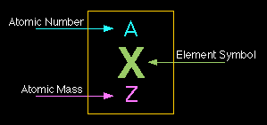

All matter is made up of atoms, which are the smallest units of chemical elements. Atoms themselves are made up of three main subatomic particles: protons, neutrons, and electrons. These particles have different charges and locations within the atom.
Subatomic Particles
Mass and charge of subatomic particles are expressed in terms of the mass of a proton, u = \(1.67 \cdot 10^{-27} kg\) and the elementary charge, e = \(1.6 \cdot 10^{-19}C\)
- Proton: Positively charged particle found in the nucleus. Charge = +1, Relative mass ≈ 1 u.
- Neutron: Neutral particle found in the nucleus. Charge = 0, Relative mass ≈ 1 u.
- Electron: Negatively charged particle found orbiting the nucleus in electron shells. Charge = -1, Relative mass ≈ 1/1836 u.

Structure of the Atom
The center of the atom is called the nucleus, which contains protons and neutrons. Electrons move around the nucleus in energy levels or shells. Most of the atom's mass is concentrated in the nucleus, while most of its volume comes from the electron cloud.
Atomic Number and Mass Number
- Atomic Number (Z): Number of protons in the nucleus. It also equals the number of electrons in a neutral atom.
- Mass Number (A): Total number of protons and neutrons in the nucleus.
Example: Carbon has 6 protons and 6 neutrons. So its atomic number is 6 and mass number is 12.
Summary Table
| Particle | Charge | Relative Mass | Location |
|---|---|---|---|
| Proton | +1 | 1 | Nucleus |
| Neutron | 0 | 1 | Nucleus |
| Electron | -1 | 1/1836 | Electron shell |
Written by Thenura Dilruk